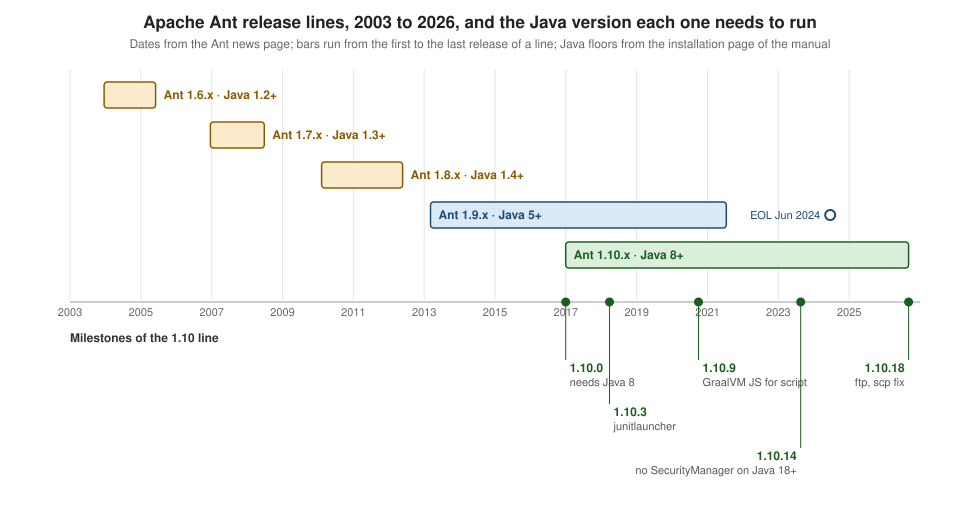

Ant: Versions & Release History
|
This content was generated with the assistance of AI and should be verified against the official documentation before being relied on in production. |
This page is written against Apache Ant 1.10.18, released on 6 September 2026, with Apache Ivy 2.6.0 and the Maven Resolver
Ant Tasks 2.0.0. Every example marked as run was executed on JDK 26 (and, where the page says so, on JDK 17) on 2026-10-16 in a
scratch directory; output that comes from a run is shown as printed, with the long scratch path shortened to <scratch>. All
dates, release numbers and identifiers were looked up on the Apache pages cited next to them on the same day.
Ant is the oldest of the three tools and the one that changes least: a build file written for Ant 1.6 in 2003 still runs on Ant 1.10.18. That stability is the reason to know the history. When a build file fails, the cause is more often a JDK that removed something (a compiler, a security manager, a script engine) than an Ant change, and the answer is "which Ant release first handled that JDK". This page is the table that answers it. The other Ant pages say "since Ant 1.x" for a feature; the release that table row names is the one to look for here. The running scenario is the tidepool toolkit described on the section landing page. For the same question about the other two tools see Maven versions and release history and Gradle versions, compatibility and release history.
Release lines and the Java each one needs
Ant is released in lines named after the second number of the version. Each line has a minimum Java version for the JVM that runs
Ant; that is the version of Java that runs the build, not the version your code targets (the javac task can compile for an older
release, as the Compiling Java page shows).

| Line | First and last release (from the news page) | Needs at run time | Notes |
|---|---|---|---|
1.6 |
1.6.0, 18 December 2003, to 1.6.5, 2 June 2005 |
JDK 1.2 |
|
1.7 |
1.7.0, 19 December 2006, to 1.7.1, 27 June 2008 |
JDK 1.3 |
Resources and resource collections (the resources page says they are available for explicit use since 1.7). Windows 9x no longer supported. |
1.8 |
1.8.0, 8 February 2010, to 1.8.4, 23 May 2012 |
JDK 1.4 |
|
1.9 |
1.9.0, 7 March 2013, to 1.9.16, 13 July 2021 |
JDK 5 |
The last line for Java 5, 6 and 7. End of life on 19 June 2024; the Ant PMC urged everyone to use 1.10. |
1.10 |
1.10.0, 31 December 2016, to 1.10.18, 6 September 2026 |
JDK 8 |
The current line. Based on 1.9.7, with new features developed here first. |
Source: Apache Ant: Project News
The manual states the floors in one sentence: Ant 1.10 works with JDK 8 and higher, 1.9 with JDK 1.5 and higher, 1.8 with JDK 1.4,
1.7 with JDK 1.3, 1.6 with JDK 1.2, and 1.2 to 1.5 with JDK 1.1. The news items of the years when both lines were maintained say
the same thing in other words: 1.9.x needs Java 5 and receives mostly bug fixes, 1.10.x needs Java 8 and receives the new
features, and both branched from Ant 1.9.7. A 1.10 release therefore contains everything of the matching 1.9 release except the
few tasks that cannot work on Java 8, such as apt.
There is no "Java 21" or "Java 25" release of Ant
Ant does not publish a table of supported JDKs. The manual says only that Ant 1.10 needs JDK 8 or later and that a more recent Java gives you more tasks (a JRE-only installation loses the tasks that need compiler classes). The news item for 1.10.15 names Java 22 as the newest version it can be used with; the news items for 1.10.16 and 1.10.17 say only that the release can be used with Java 8 and higher, and the one for 1.10.18 names no Java version at all. The honest summary is that the 1.10 line is built and tested against each new JDK as it appears and fixes what breaks, and that a JDK newer than the release of Ant you run is a risk you test, not a promise you read. The next table shows what that looked like, release by release. Here, Ant 1.10.18 ran on JDK 26, 21 and 17 with the build files on this page, which is evidence, not a support statement.
Checking what you run: ant.version and ant.java.version
Ant defines two properties for every build. ant.version holds the whole banner line (not just the number), and
ant.java.version the version of the JVM that runs Ant, in the short form (17, 26; since 1.10.0 it is 9, not 1.9, on
Java 9, a change listed under "changes that could break older environments" in that release). Two conditions turn them into
guards: antversion with atleast or exactly, and javaversion with atleast, atmost or exactly (javaversion since Ant 1.10.2, the
release that also added the javac10+ compiler value; atmost since 1.10.10). The target below fails early and in plain words when the toolchain is too old, which is
cheaper than the cryptic failure later.
<?xml version="1.0" encoding="UTF-8"?>
<project name="version-guard" default="check">
<target name="check" description="Fail early when the toolchain is too old">
<fail message="Ant 1.10.14 or newer is required, found: ${ant.version}">
<condition>
<not>
<antversion atleast="1.10.14"/>
</not>
</condition>
</fail>
<fail message="Java 17 or newer is required, found: ${ant.java.version}">
<condition>
<not>
<javaversion atleast="17"/>
</not>
</condition>
</fail>
<echo>${ant.version} running on Java ${ant.java.version}: OK</echo>
</target>
</project>Run with Ant 1.10.18 on JDK 26, and with JAVA_HOME pointing at a JDK 17 (a JetBrains Runtime 17.0.14):
ant check
JAVA_HOME=<path to a JDK 17> ant checkBuildfile: <scratch>/versions/build.xml
check:
[echo] Apache Ant(TM) version 1.10.18 compiled on September 3 2026 running on Java 26: OK
BUILD SUCCESSFUL
Total time: 0 seconds
Buildfile: <scratch>/versions/build.xml
check:
[echo] Apache Ant(TM) version 1.10.18 compiled on September 3 2026 running on Java 17: OK
BUILD SUCCESSFUL
Total time: 0 secondsThe conditions are documented in the manual’s conditions page, which also lists isset, os, typefound and the other tests
used for feature detection (the Conditions & Control Flow
page covers them all). The equivalents are mvn -v and the <requireMavenVersion> enforcer rule in Maven, and ./gradlew --version
and GradleVersion.current() in Gradle.
Release history of the 1.10 line
The rows below keep the changes a build author feels: a raised floor, a removed or deprecated task, a changed default, a new
test framework. Dates are the ones on the Ant news page. Each change was checked against the WHATSNEW file (see the note on
its location below) or the manual page of the task.
| Release (date) | What changed |
|---|---|
1.9.0 (7 March 2013) and 1.9.1 (21 May 2013) |
1.9.1 added the conditional attributes: |
1.10.0 (31 December 2016) |
Java 8 minimum; the 1.9.x series stays compatible with Java 5. The |
1.10.1 (6 February 2017) |
Tasks and types for XZ compression, through the XZ for Java library. |
1.10.2 (6 February 2018) |
|
1.10.3 (27 March 2018) |
|
1.10.4 (22 June 2018) |
|
1.10.5 (13 July 2018) |
|
1.10.6 (8 May 2019) |
|
1.10.7 (5 September 2019) |
|
1.10.8 (13 May 2020) |
|
1.10.9 (30 September 2020) |
GraalVM JavaScript for |
1.10.10 (17 April 2021) |
|
1.10.11 (13 July 2021) |
Fixes CVE-2021-36373 and CVE-2021-36374 (denial of service on specially crafted tar and zip-like archives). Released with 1.9.16. |
1.10.12 (19 October 2021) |
A bug-fix release. |
1.10.13 (10 January 2023) |
|
1.10.14 (20 August 2023) |
No |
1.9.x end of life (19 June 2024) |
The Ant PMC votes to end the 1.9.x series; the last release is 1.9.16 (13 July 2021). |
1.10.15 (29 August 2024) |
|
1.10.16 (1 April 2026) |
Windows junctions are treated like symbolic links (builds using |
1.10.17 (10 April 2026) |
Fixes a regression of 1.10.16 in the programmatic use of Ant (it affected Eclipse): |
1.10.18 (6 September 2026) |
Fixes CVE-2026-78254, path traversal in |
1.10.19 (not released) |
The |
Source: Apache Ant: Project News
Source: Ant manual: tstamp
Two practical points about where to read the history. First, ant.apache.org/WHATSNEW is a 404 today; the file lives in the
root of every distribution and in the Git repository. Second, the two copies of the 1.10.18 file are not the same. The WHATSNEW
inside the 1.10.18 binary archive (unpacked for this page) lists the tstamp, propertyfile, record and Jakarta Mail items
for 1.10.18, but it has no "Changes that could break older environments" section for it; the copy on the Git master has that
section, with the ftp default change and the two allowFilesToEscapeDest attributes. The manual pages of ftp and scp in
the archive do document the new attributes and defaults. If a security upgrade changes a default, read the manual page of the task
and the master WHATSNEW, not only the file that shipped.
Per-release notes with a "changes that could break older environments" section are also kept in the archive at
https://archive.apache.org/dist/ant/ as RELEASE-NOTES-<version>.html, and the manual’s install page tells you to read that
section when you upgrade.
The ftp and scp change in practice
The 1.10.18 change is the one most likely to break a working build, so it deserves its three lines. A build that downloads with
ftp action="get" or scp and relied on files being written outside the destination directory (for example by .. segments in
the remote names) fails after the upgrade; the fix is to stop relying on it, and the escape hatch is allowFilesToEscapeDest="true"
on the task. A build that uses ftp with useFtps="true" now also asks for an encrypted data channel; a server that
only supports a clear data channel needs useSecureDataChannel="false". The
Network & Remote Tasks page covers both tasks.
Nothing on this page was run against a real FTP or SSH server (not run here); the attributes and defaults above come from the
manual pages of the 1.10.18 distribution.
What a newer JDK removed and how Ant followed
Most of the 1.10 history reads as a list of JDK removals. The table gathers them, with the Ant release that deals with each one and what you do in a build file.
| JDK change | Ant release | What Ant does | In a build file |
|---|---|---|---|
|
1.10.0 |
Task removed. |
Annotation processing is done by |
|
1.10.2 |
Throws on Java 10 and newer. |
Use the |
CORBA removed in Java 11 |
1.10.3 |
|
Move away from CORBA. |
JAI and internal APIs gone in Java 9 |
1.10.2, 1.10.6 |
|
Use |
|
1.10.8 |
Throws on Java 15 and newer. |
Modern RMI generates its stubs at run time, so most builds can drop the task; there is no replacement task. |
Nashorn removed in Java 15 |
1.10.9 |
|
Add the GraalVM JavaScript JARs (see Installation) or write the script in Groovy or another language. |
|
1.10.13, 1.10.14 |
Ant does not set one; |
Fork ( |
Log4j 1 unmaintained |
1.10.2 |
|
Use another listener; see the Listeners, Loggers & Input Handlers page. |
The SecurityManager row is the one that can be shown in a few lines. The build below compiles a class that calls
System.exit(3) and runs it twice, once inside Ant’s JVM and once in a forked JVM. The class is compiled with
release="17" so that the JDK 17 run can load it.
<project name="exit-demo" default="exit-in-process">
<target name="compile-exit">
<mkdir dir="build/classes"/>
<javac srcdir="src" destdir="build/classes" release="17" includeantruntime="false"/>
</target>
<!-- Task code that calls System.exit() and runs inside Ant's own JVM -->
<target name="exit-in-process" depends="compile-exit">
<java classname="Exit" classpath="build/classes" fork="false" failonerror="false"/>
<echo>still alive after the in-process call</echo>
</target>
<target name="exit-forked" depends="compile-exit">
<java classname="Exit" classpath="build/classes" fork="true" failonerror="false" resultproperty="exit.code"/>
<echo>still alive, exit code ${exit.code}</echo>
</target>
</project>public class Exit {
public static void main(String[] args) {
System.out.println("about to call System.exit(3)");
System.exit(3);
}
}On JDK 26 the in-process run ends the build with no "BUILD SUCCESSFUL" or "BUILD FAILED" line, and Ant’s own exit status is the
3 of the class; on JDK 17, where Ant can still install a SecurityManager, Ant intercepts the call, prints the
terminally-deprecated warnings that come with it and carries on. The forked run behaves the same on both.
ant exit-in-process
JAVA_HOME=<path to a JDK 17> ant exit-in-process
ant exit-forkedBuildfile: <scratch>/versions/build.xml
compile-exit:
[mkdir] Created dir: <scratch>/versions/build/classes
[javac] Compiling 1 source file to <scratch>/versions/build/classes
exit-in-process:
[java] about to call System.exit(3)exit-in-process:
WARNING: A terminally deprecated method in java.lang.System has been called
WARNING: System::setSecurityManager has been called by org.apache.tools.ant.types.Permissions (file:<scratch>/dist/apache-ant-1.10.18/lib/ant.jar)
WARNING: Please consider reporting this to the maintainers of org.apache.tools.ant.types.Permissions
WARNING: System::setSecurityManager will be removed in a future release
[java] about to call System.exit(3)
[java] Java Result: 3
[echo] still alive after the in-process call
BUILD SUCCESSFUL
Total time: 0 secondsexit-forked:
[java] about to call System.exit(3)
[java] Java Result: 3
[echo] still alive, exit code 3
BUILD SUCCESSFUL
Total time: 0 secondsThe first block is the JDK 26 run (the exit status of the ant process was 3), the second the JDK 17 run (the [mkdir] and
[javac] lines were identical and are left out), the third the forked run on JDK 26. The lesson matches what the release notes
say: the java task is safe in a build only when it is forked, which is also the better default for isolation.
Gradle’s JavaExec and the exec:exec goal of Maven’s exec plugin start a separate process; exec:java runs the program
inside Maven’s own JVM, so it shares the same failure mode as Ant’s in-process tasks.
Source: Ant manual: the java task and Exec Maven Plugin
Source: Ant manual: the permissions type
Security advisories
The Ant project lists every advisory with the release that fixes it. The table has the ones from the last decade, in the order a build owner meets them. The Supply-Chain Security page puts them next to the Maven and Gradle advisories of 2026 and explains the mitigations; here the point is the upgrade path.
| Fixed in | Identifier and rating | What it is | Build-file consequence |
|---|---|---|---|
Ant 1.10.18 |
CVE-2026-78254, moderate |
Path traversal in the |
Upgrade; set |
Ant 1.10.11 (and 1.9.16) |
CVE-2021-36373 and CVE-2021-36374, low |
Denial of service by memory use when reading a specially crafted tar, zip or zip-derived archive such as a JAR. |
Upgrade; do not unpack archives from untrusted sources. |
Ant 1.10.9 |
CVE-2020-11979, medium |
|
Point |
Ant 1.10.8 (and 1.9.15) |
CVE-2020-1945, medium |
Temporary files in the shared temporary directory, copied back into the build tree by |
The same private temporary directory. |
Ant 1.10.2 (and 1.9.10) |
CVE-2017-5645, low |
Denial of service through the Log4j 1 library used by |
Stop using |
The Ivy project keeps its own list: CVE-2026-26032 (a path traversal in the PackagerResolver, fixed in Ivy 2.6.0, affecting
everything until 2.5.3), CVE-2022-46751 (XML external entities, fixed in 2.5.2) and CVE-2022-37865 and CVE-2022-37866 (file
overwrite and path traversal, fixed in 2.5.1). Two more identifiers appear in the 1.10.18 and 1.10.19 release notes: CVE-2025-7962
in the Jakarta Mail library that Ant 1.10.18 upgraded to 2.0.2, and CVE-2026-94114 in the BCEL library, fixed in the unreleased
1.10.19 by updating BCEL to 6.13.0. Neither of those is an Ant vulnerability as such; both are dependencies that the optional
tasks load.
Source: Apache Ant: Security Reports
Source: Apache Ivy: Security Reports
The companion releases
Ant itself has no dependency management. The two answers the Ant project and the Maven project give are separate downloads with their own versions, and the build usually pins both. Their pages are Ivy Overview and Maven Resolver Ant Tasks.
| Component | Current release | History worth knowing |
|---|---|---|
Apache Ivy |
2.6.0, announced 14 July 2026 (the Ivy home page and Maven Central show 15 July 2026) |
2.0.0 (20 January 2009), 2.1.0 (8 October 2009), 2.2.0 (30 September 2010), 2.3.0, 2.4.0, 2.5.0, 2.5.1 (4 November 2022), 2.5.2 (20 August 2023), 2.5.3 (23 December 2024), 2.6.0. Ivy became an Ant subproject in 2007. The 2.6.0 announcement calls it mainly a bug-fix and feature release; it also fixes a vulnerability. |
Maven Resolver Ant Tasks |
2.0.0, on Maven Central since 6 August 2026 |
Central lists 1.2.0, 1.2.1, 1.3.0, 1.3.1, 1.4.0, 1.5.0, 1.5.1, 1.5.2, 1.6.0, 1.6.1 and 2.0.0. The site says the tasks serve Ant 1.7 and newer. |
Both libraries target Java 8 at run time: the class files of the Ivy 2.6.0 JAR and of the main classes of the Resolver Ant Tasks
2.0.0 uber JAR are version 52 (the uber JAR also bundles older dependencies, which the check ignores), and the Ivy manifest says
Bundle-RequiredExecutionEnvironment: JavaSE-1.8. That was read from the JARs downloaded from Maven Central for this page, with
Python’s zipfile module; it is a measurement, not a promise from the projects.
The distribution of Ant itself pins the libraries it knows how to fetch. In lib/libraries.properties of the 1.10.18 archive
the relevant lines are the following (printed from the file):
ivy.version=2.6.0
ant-antunit.version=1.5.0
ant-cyclonedx.version=0.1
bcel.version=6.12.0
junit-platform-launcher.version=1.10.5
jakarta.mail.version=2.0.2
m2.version=1.4.0Three of those lag the releases published since: the ant -f fetch.xml helper (see
Installation) installs the CycloneDX Antlib 0.1 although 0.2 was
published on 25 September 2026, a JUnit Platform launcher 1.10.5 although newer JUnit 5 and 6 releases exist, and the Resolver Ant
Tasks 1.4.0 although 2.0.0 exists. A build that needs the current versions declares them itself (with Ivy, with the Resolver Ant
Tasks or with a committed lib directory) rather than relying on fetch.xml. The properties file also says bcel.version=6.12.0,
the version before the one named in CVE-2026-94114.
Antlibs and the other subprojects
The Ant project releases a few antlibs separately from Ant. The table lists the current state from the news page and Maven Central.
| Project | Release | Notes |
|---|---|---|
AntUnit |
1.5.0, 19 June 2026 |
New assertions; tests can run with a different classpath than the rest of the build. Requires Ant 1.10.13 or later at run time. |
CycloneDX Antlib |
0.2, 25 September 2026 (0.1 on 3 June 2026) |
Types and a task that create CycloneDX SBOMs; 0.2 creates CycloneDX 1.7 by default and can build SBOMs from Ivy files. |
Props Antlib |
1.0.0, 27 June 2026 |
The first release of a library of property-resolution handlers that existed for years; works with Ant 1.8.0 and newer, compiled for Java 1.4. |
Compress Antlib |
1.5, June 2017 |
Adapted to Commons Compress 1.14, with Brotli, LZ4, Snappy and LZMA support. No release since; treat it as dormant. |
Retired |
EasyAnt (13 December 2016), IvyDE (26 November 2023), .NET and VSS antlibs (27 June 2026) |
All their resources were removed or made read-only. The Ant PMC says a subproject could be reactivated if a community grows. |
Source: Apache Ant: Project News
Source: Apache Ivy 2.6.0: release notes
Source: Apache Ant Antlibs
The antlibs have their own download page, linked from the Antlibs page above. Ant-Contrib, which many older build files use for if, for and foreach, is not an Apache project and is not on any of these
pages; the Deprecations & Migration page says what
replaced it in Ant itself.
Which release should a build use
For a new or maintained build the answer is the newest 1.10.x. The reasons are in this page: it is the only maintained line, it
has all the JDK fixes of the table, and the latest release, 1.10.18, closed a path traversal in ftp and scp. A build that must run on
Java 7 or older can no longer use a maintained Ant. A build that already uses junit (the old task) works on every release and
can move to junitlauncher, available since 1.10.3 and complete enough since 1.10.7; the
Testing with JUnit & junitlauncher page
walks through it.
The book that most Ant learners met first, Java Development with Ant (Manning, 2002), was written for Ant 1.5, a year before
the 1.6 line introduced import, macros, presets and antlibs; the build-file structure it teaches is still valid, but the
modularisation features and every item of the 1.10 table are missing from it. See the book list on the section landing page.
The cadence differs from the other two tools: Ant opened a new line five times between 2003 and 2016 and has stayed on 1.10 since the end of 2016, so almost every upgrade is a patch release. The Maven and Gradle pages linked in the introduction show their own policies.